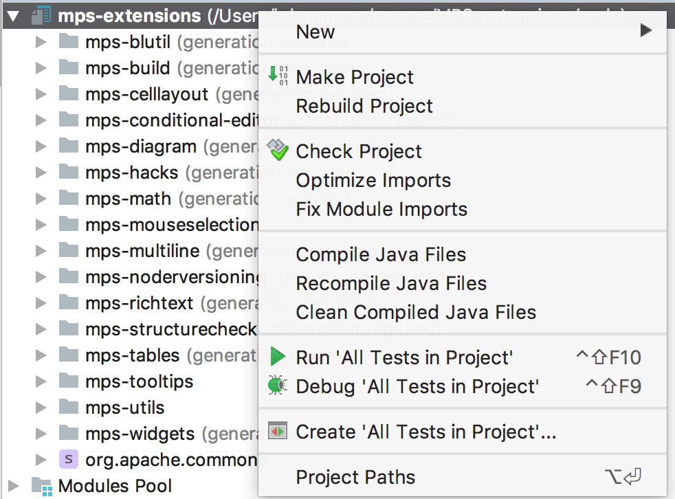
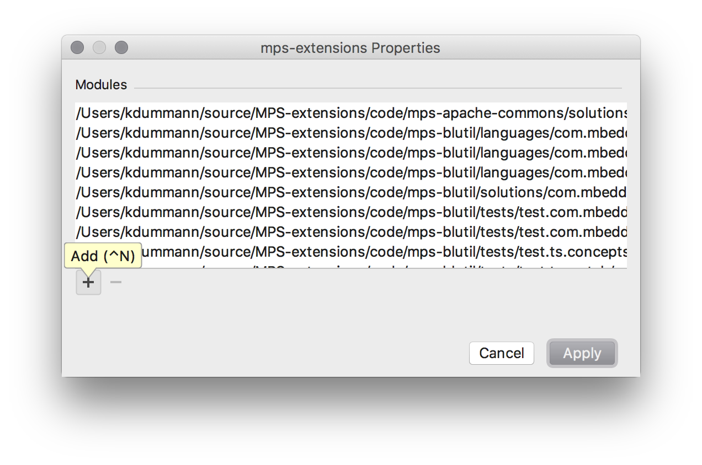
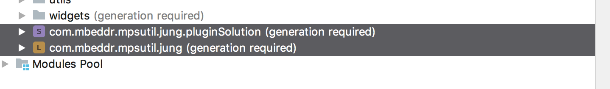
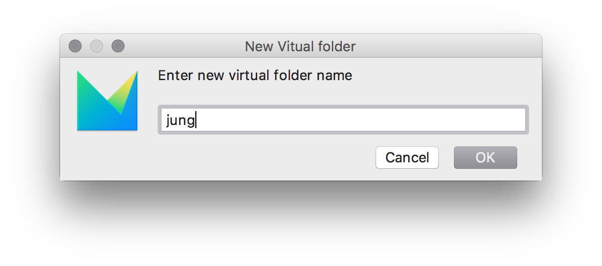
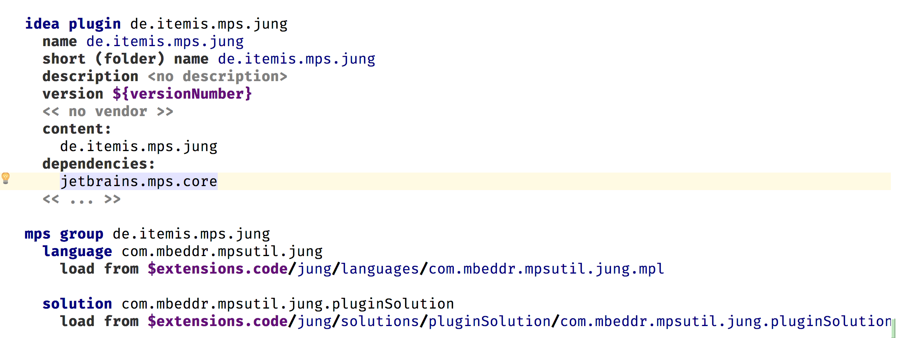
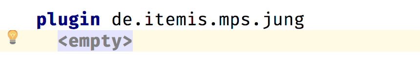
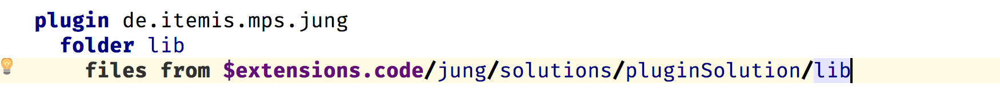

Migrating an Extension from the mbeddr Platform
There are two different ways of migrating an extension from the mbeddr platform to the MPS-Extensions:
- The extension already exists as a separate plugin in the mbeddr platform
- The extension is currently part of the big
com.mbeddr.mpsutilplugin
A list of the first (easier) to migrate extensions is here.
Migrating extensions from that list is pretty straightforward:
Check the Dependencies
First of all, check if all dependencies of the extension to migrate are already migrated to this repository (https://github.com/JetBrains/MPS-extensions/). - If not, you can't migrate the extension.
How do you accomplish that?
To check whether the target extension already has all its dependencies migrated:
1. Download the latest mbeddr.core code in the mbeddr repository: https://github.com/mbeddr/mbeddr.core.
2. Once downloaded, open the com.mbeddr.build project in MPS.
- The location should be ([your download folder]\mbeddr.core\code\languages\com.mbeddr.build).
3. Get the details of the target extension:
i) Open the related GitHub issue for the target extension.
- For example, for the "querylist" extension, the URL of the github issue is: https://github.com/JetBrains/MPS-extensions/issues/23).
ii) Inside the issue page, click the link that is related to the extension.
- The link normally starts with http://127.0.0.1.
- For this example, the link is: http://127.0.0.1:63320/node?ref=r%3A742f344d-4dc4-4862-992c-4bc94b094870%28com.mbeddr.mpsutil.dev.build%29%2F7231064182705610173&project=com.mbeddr.build
iii) Clicking that link will select the corresponding plugin entry in the build script in your open MPS project.
After doing the steps above, you will see something like this entry in MPS, in your open com.mbeddr.build project:
idea plugin com.mbeddr.mpsutil.jung
name com.mbeddr.mpsutil.jung
short (folder) name com.mbeddr.mpsutil.jung
description <no description>
version ${mbeddr.version}
<< no vendor >>
content:
group.jung
dependencies:
jetbrains.mps.core
<< ... >>
The first thing you do is check the dependencies section of the plugin. If it contains plugins that start with com.mbeddr then it still has dependencies on mbeddr and cannot be moved. (You might want to move the plugin if you have the time. 😉 )
Move the Files
If all dependencies are already part of the MPS-extensions, we can start with migrating the extension. Follow the reference(s) in the content section. group.jung in this case:
mps group group.jung
solution com.mbeddr.mpsutil.jung.pluginSolution
load from $mbeddr.github.core.home/code/languages/com.mbeddr.mpsutil/languages/com.mbeddr.mpsutil.jung/solutions/pluginSolution/com.mbeddr.mpsutil.jung.pluginSolution.msd
language com.mbeddr.mpsutil.jung
load from $mbeddr.github.core.home/code/languages/com.mbeddr.mpsutil/languages/com.mbeddr.mpsutil.jung/com.mbeddr.mpsutil.jung.mpl
Both modules above are located under the code/languages/com.mbeddr.mpsutil/languages/com.mbeddr.mpsutil.jung directory.
Steps to create a new extension:
1. Create a folder in the MPS-extensions repository where we can place these files.
- This folder should be placed under the existing code directory of the MPS-Extensions repository.
- The naming convention is that it shall contain the last name of the namespace. In this case jung.
- The resulting folders therefore should be: code\jung and also code\jung\languages.
-
Copy all the files from the mbeddr repository
code/languages/com.mbeddr.mpsutil/languages/com.mbeddr.mpsutil.jungto the newcode/jung/languagesin the MPS-extensions repository. -
After copying, check if there is an existing
solutionsfolder to the language you migrated such that you now have acode/jung/languages/solutionsfolder. If you do, move the files fromcode/jung/languages/solutionsto thecode/jung/solutionsfolder. This is because the structure in the MPS-extensions repository slightly differs from the one in mbeddr. -
Remember: you are copying from the
mbeddr.corefolder and pasting them to theMPS-Extensionsfolder.
Sounds too complicated? Don't worry we will help you when sent the pull request to get it right. 😉
Adding the Files to the Project
The files need to be part of the MPS project to show up in MPS. This is done by adding them to the project path/modules:

And then selecting the copied files:

The files end up in no folder in the project by default. They should be placed in a virtual folder of the project that matches the subfolder under the code folder. In this case jung:
 
After this is done the last step that is missing is adding the plugin to the build.
Adding it to the Build
To build the plugin that was moved, it needs to be a part of the build scripts. These scripts are located under the build folder of the project. The solution of interest is de.itemis.mps.extensions.build. And then the de.itemis.mps.extensions build project:

The first thing required is a group where all the implementation modules of the plugin are placed. Tests are placed in a different script. The group is named similar to the mbeddr group name but the prefix is not com.mbeddr.mpsutil but de.itemis.mps. In this case this results to de.itemis.mps.jung. This group then contains all the solutions and languages of the plugin:

After the group is created, an idea plugin is required. This plugin references the group and should be placed right above the group in the build script. This is very important to keep the build script maintainable.

The final step is adding the plugin to the layout section of the build project.

After adding the plugin to the layout it should be possible to build the model. But in most cases an error like this will be shown:
cannot build relative path to `wstx-asl-3.2.6.jar': No such path in local layout
-- -- was input node: [path] BuildSourceMacroRelativePath null[8622958246116067669] in de.itemis.mps.extensions.build@5_1
-- was template node: r:54537613-52b5-40a8-b223-e87f0960b04f(jetbrains.mps.build.mps.generator.template.main@generator)/4743026300739052425
This error message means that some jar files that are used by the language or some solutions are missing. The convention here is to create a lib folder in the plugin and include the required jar files. These files are usually contained in a lib folder.

Sending the Pull Request
To verify that everything works correctly run:
./gradlew test # mac OS / Linux
gradlew.bat test # Windows
This command should finish successfully. After that please create pull request at our repository and label it with migration
If something doesn't work out quite well or you are unsure what to do, don't worry. You can still send the PR and somebody will guide you through the process.
Bonus
If you are really eager you can send a PR to the mbeddr platform repository to remove the plugin there.